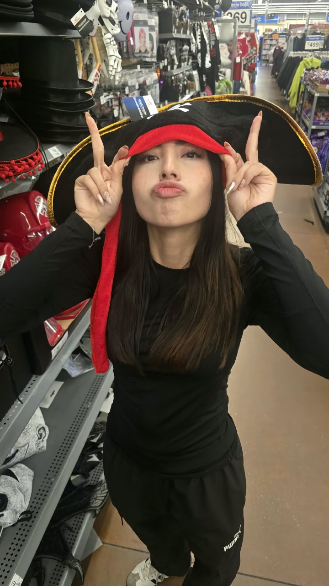
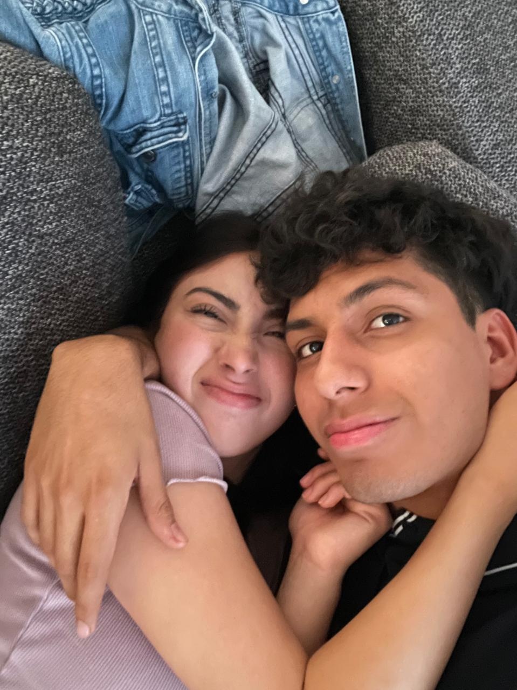
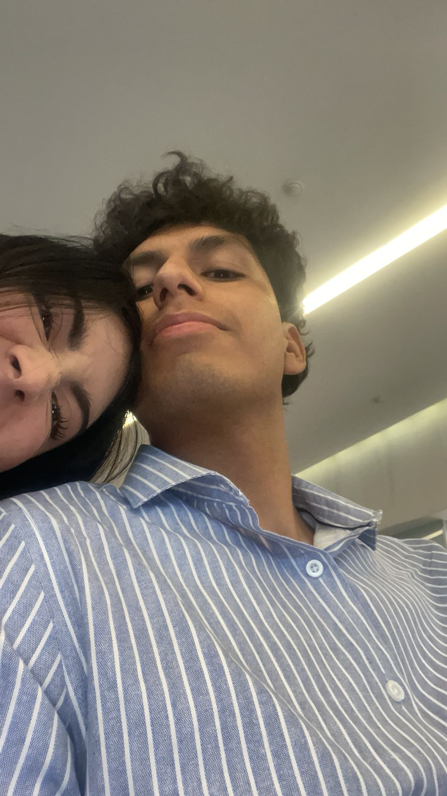
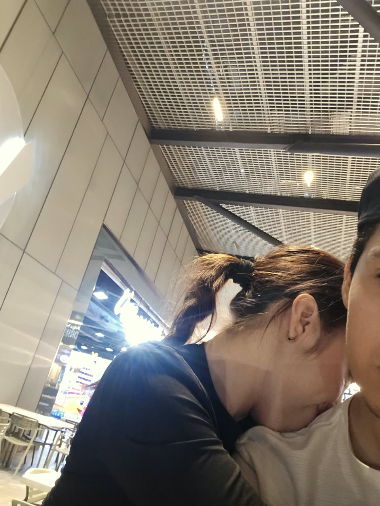
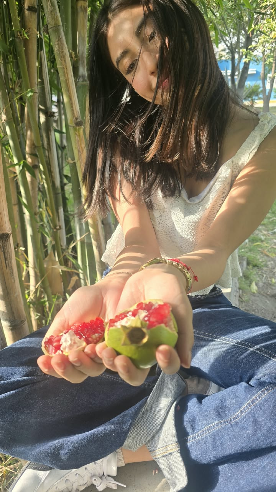
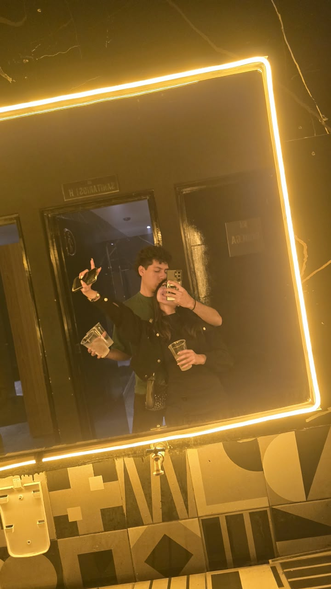
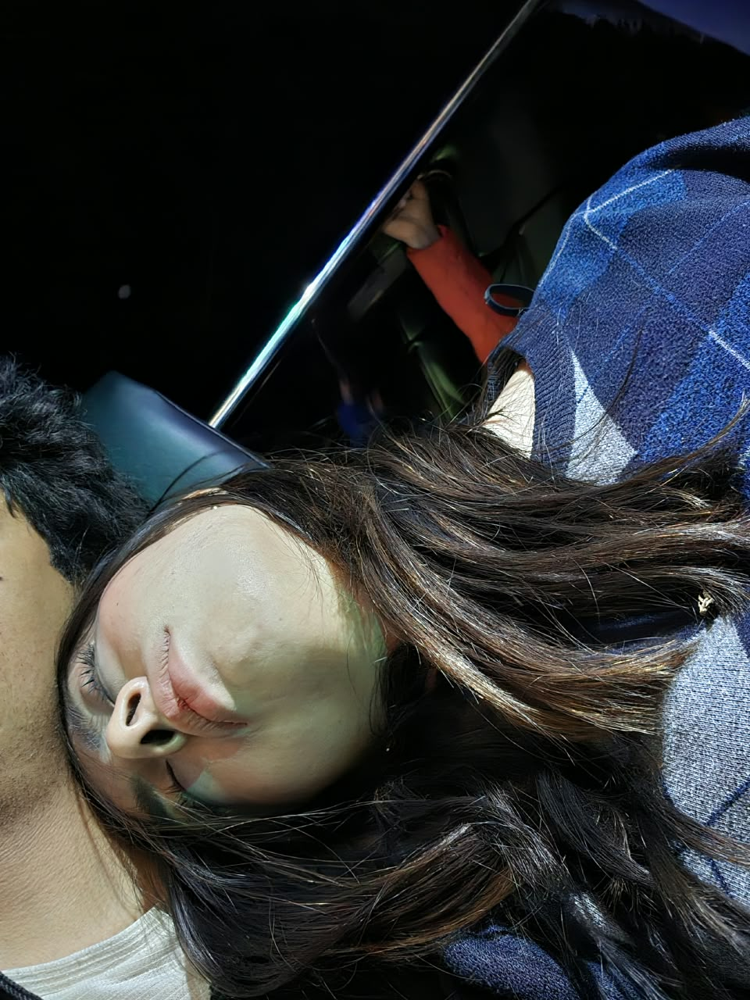
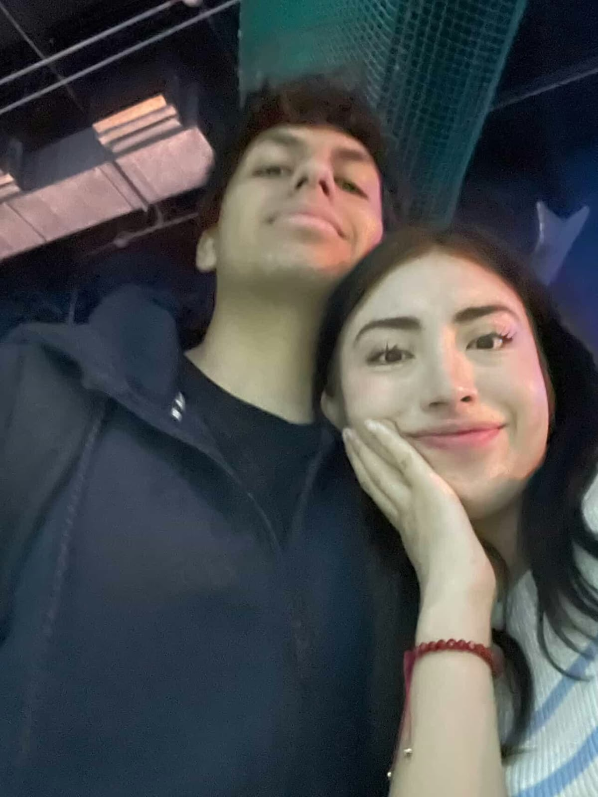

Cuatro meses desde aquel “sí”, y entre tantos lugares, tantas personas y tantas historias posibles, qué bonito que la vida haya hecho que la mía comenzara a escribirse contigo.
Porque a veces los números también pueden contar una historia.
💕 Nos conocimos el 26 de abril de 2026.
💗 Hoy, 19 de octubre de 2026, cumplimos 4 meses desde aquel “sí” del 19 de junio.
Una historia que empezó de una manera sencilla y terminó significando muchísimo para mí.
Fuimos a un concierto sin saber que esa noche no solo íbamos a escuchar música. También íbamos a conocer a una persona que terminaría convirtiéndose en alguien muy especial.
Y de pronto los mensajes empezaron a formar parte de nuestros días. Poco a poco te fui conociendo, riendo contigo y disfrutando cada conversación.
Flores lilas, una cartita, nervios y una pregunta muy importante. Ese día convertimos todo lo que sentíamos en algo oficialmente nuestro.
Tres meses de novios, muchísimos recuerdos, risas, abrazos, besos y momentos que quiero seguir guardando contigo.
Hoy cumplimos cuatro meses siendo novios. Cuatro meses desde que tuve la dicha de preguntarte si querías ser mi novia y tú me dijiste que sí. Y sigo sintiéndome igual de afortunado que el primer día.
Lo bonito es que aquí no termina nada. Todavía quedan muchos lugares, fotografías, aventuras y recuerdos por agregar a nuestra historia.
Algunos de los momentos más bonitos que hemos compartido juntos.








No todo tiene que ser una gran fecha para convertirse en un recuerdo bonito.
Me encanta tu forma espontánea y ocurrente de ser. Incluso un día normal puede terminar siendo uno de mis favoritos contigo.
Hay momentos en los que un abrazo tuyo dice mucho más que cualquier mensaje. Estar cerquita de ti simplemente se siente bien.
Me enamora poder conocerte tal como eres y descubrir cada día una parte nueva de la persona increíble que tengo a mi lado.
Si alguien me hubiera dicho que una noche de música iba a terminar llevándome hasta ti, probablemente no lo habría creído.
Desde aquellos primeros mensajes hasta todo lo que hemos compartido después, me gusta saber que poco a poco fuimos creando nuestro propio espacio.
No busco una historia perfecta. Quiero una historia nuestra, con momentos felices, aprendizajes y muchas páginas por escribir.
Cuatro meses después, esta carta sigue siendo para ti.
Mi Valesita:
Hoy cumplimos cuatro meses siendo novios, cuatro meses desde que tuve la dicha de preguntarte si querías ser mi novia y tú me dijiste que sí. Recuerdo con mucho cariño ese momento, las flores lilas, la cartita que te hice y todos los nervios que tenía. Si pudiera volver a vivirlo, lo haría una y mil veces, porque fue uno de esos momentos que quiero guardar siempre en mi corazón.
Desde que llegaste a mi vida, he tenido la oportunidad de conocer a una personita que me encanta cada vez más. Me gusta tu forma de ser, tus ocurrencias, tus abrazos, tus besitos, la manera en que me haces reír y esos pequeños detalles tuyos que quizá para ti son normales, pero que para mí te hacen tan especial. Me gusta verte sonreír, escucharte hablar de las cosas que te emocionan y compartir contigo hasta los momentos más sencillos. Porque contigo he aprendido que no se necesitan grandes planes para crear recuerdos bonitos; a veces basta con estar juntitos, abrazarte y disfrutar de tenerte a mi lado.
Quiero que sepas que me siento muy afortunado de tenerte en mi vida. No porque todo tenga que ser perfecto, sino porque eres tú, con tu forma tan particular de ser, con tus ocurrencias, tus sentimientos y todo eso que te hace ser la niña de la que me enamoré. Me gusta seguir conociéndote, descubrir cosas nuevas de ti y encontrar nuevas razones para quererte. Y eso es algo que quiero seguir haciendo: seguir descubriendo quién eres y construyendo recuerdos contigo.
Mi niña, yo sé que una relación no se trata solamente de decir cosas bonitas o de celebrar fechas especiales. También se trata de aprender a conocernos, comprendernos, acompañarnos y crecer juntos. Quiero seguir aprendiendo a amarte de la manera en que tú necesitas sentirte amada, así como también deseo que podamos comprendernos cada vez mejor. Quiero que podamos hablar de lo que sentimos, reírnos de nuestras ocurrencias, apoyarnos cuando las cosas no salgan como esperamos y recordar que estamos del mismo lado, incluso cuando no pensemos igual.
No quiero que el tiempo haga que dejemos de sorprendernos, de tener detalles bonitos o de buscar momentos para estar juntos. Quiero seguir invitándote a salir, darte abrazos que duren mucho, robarte besitos, hacerte reír con mis tonterías y encontrar nuevas formas de recordarte lo mucho que me gustas. Quiero que tengamos muchísimas primeras veces más, lugares por conocer, fotografías por tomar, canciones que nos recuerden el uno al otro y anécdotas que algún día podamos recordar y decir: «¿Te acuerdas cuando…?».
Gracias por estos cuatro meses, amor. Gracias por los momentos bonitos, por tus abrazos, tus besos, tus risas y por permitirme formar parte de tu vida. Gracias por cada recuerdo que hemos creado y por todo lo que todavía nos falta vivir. Espero que, cuando mires hacia atrás y recuerdes estos primeros meses, también encuentres muchas razones para sonreír.
Con todo mi amor,
Fredy ❤️🩹
Hoy cumplimos 4 meses y quería recordártelo de una forma bonita. De todas las coincidencias que han ocurrido en mi vida, conocerte es una de las que más agradezco. No quiero que esta página tenga un final, quiero seguir agregándole fotos, recuerdos y momentos contigo. ❤️